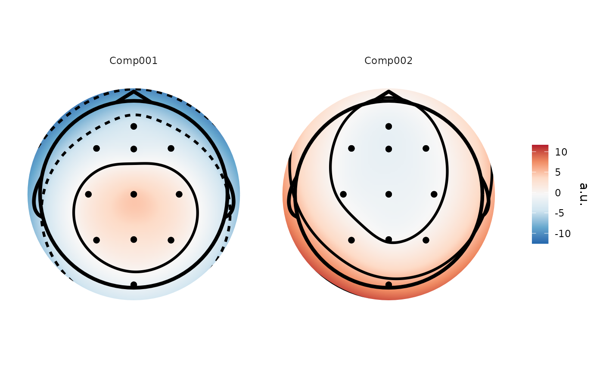

Performs Independent Component Analysis for electroencephalographic data.
Currently only available with on epoched data. Implements three different
methods of ICA - 'fastica', 'extended Infomax', and 'Second-Order Blind
Identification (SOBI)'. The resulting eeg_ICA objects can be used largely
like eeg_epochs objects.
Arguments
- data
Data to be ICAed.
- ...
Other parameters passed to function.
- method
"sobi" (default), "fastica", "infomax", or "imax". "infomax" uses the implementation from the
icapackage, whereasimaxuses the implementation from theinfomaxpackage, which is based on theEEGLABimplementation.- maxit
Maximum number of iterations of the Infomax and Fastica ICA algorithms.
- tol
Convergence tolerance for fastica and infomax. Defaults to 1e-06.
- pca
Reduce the number of dimensions using PCA before running ICA. Numeric, >1 and < number of channels
- centre
Defaults to TRUE. Centre the data on zero by subtracting the column mean. See notes on usage.
- alg
Use "gradient descent" or "newton" algorithm for extended infomax. Defaults to "gradient". Ignored if method != "infomax".
- rateanneal
Annealing rate for extended infomax. Ignored if method != "infomax".
- rate
Learning rate for extended infomax. Ignored if method != "infomax".
- verbose
Print informative messages to console.
- return
"full" or "weights". "full" returns the mixing and unmixing matrices and the source timecourses. "weights" returns only the mixing and unmixing matrices. Defaults to "full".
Notes on ICA usage
It is recommended to mean-centre your data appropriately before running
ICA. The implementations of FASTICA and extended-Infomax from the ica
package, and of SOBI ICA have this as an option which is enabled by
default, while the implementation of FASTICA in the fICA package enforces
mean-centring of the columns of the data. With epoched data, it is
recommended to centre each epoch on zero, rather than centre on the overall
channel mean. This can be achieved with the rm_baseline() function. SOBI
ICA will do this automatically, whereas the other ICA implementations will
centre on the channel means, not the epoch means.
In addition, PCA will be required if the data is not full rank. This is typical when using average reference, when the data rank will be n_electrodes - 1.
See also
Other decompositions:
eeg_decompose()
Author
Matt Craddock matt@mattcraddock.com
Examples
sobi_demo <-
run_ICA(demo_epochs,
pca = 10)
#> Reducing data to 10 dimensions using PCA.
#> Running SOBI ICA.
sobi_demo
#> Epoched ICA decomposition
#>
#> Number of components : 10
#> Number of epochs : 80
#> Epoch limits : -0.197 - 0.451 seconds
#> Sampling rate : 128 Hz
# We can plot the resulting spatial filters using `topoplot()`
topoplot(sobi_demo, 1:2)
#> Plotting 2 components
#> Using electrode locations from data.
#> Plotting head r 95 mm

if (FALSE) view_ica(sobi_demo) # \dontrun{}